Research
From each of the artist's website, I found a common theme of a black colored website with abstract and normal images to tell the audience what the website and artists are about.
For example, the Script has a black background and abstract image that conveys a dream-like sequence. Coldplay also plays around with images to show their version of a dream.


Also, One Republic has a very sleek website, as in it looks organized and put together while also being artistic in the layout.

A Great Big World and Mat Kearney are different in that they have a white website, but they start out with a video or a slideshow at the top of their homepage. So, I was thinking about setting up a video for my website to show all the artists I have. It will be a video of a slideshow of the artists. I also got inspiration for making a video as introduction with a countdown from Seymour Powell's website. The video running in the homepage gives a glimpse into what the website is about.


Lastly, I found Steven Mengin's website, which a bit how I want my website to be in terms of first entering the website with a moving visual.

I want to base the design of my website on a starry night with different lights to emphasize the idea of a dream. These posters are similar to what I have in mind.
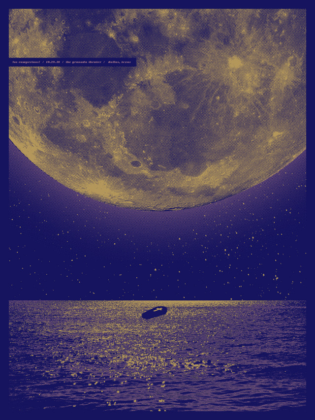
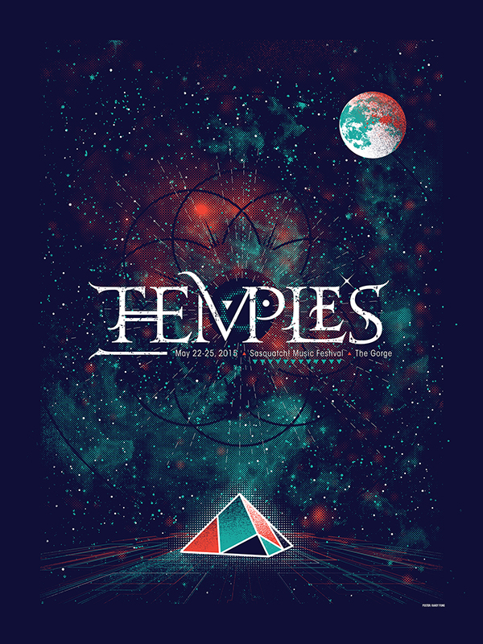
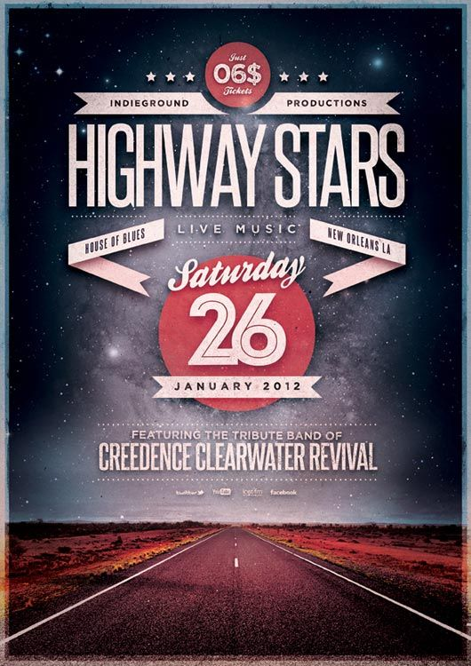
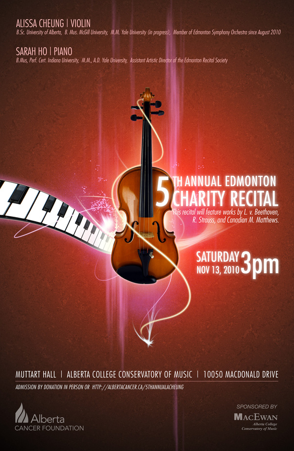
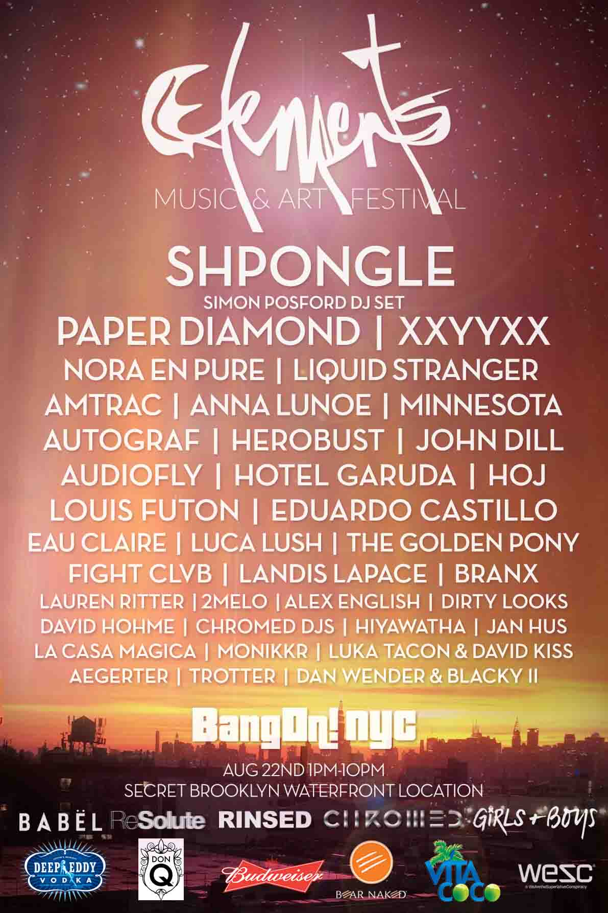
Letter of Intent
Lineup: My lineup consists of One Republic, Coldplay, The Script, A Great Big World, and Mat Kearney. The reason they were chosen is because when you listen to their voices, it is very soothing and relaxing. Their songs are very deep and compatable with dream-like sequences. Also, each group consists of a different number of members, ranging from 1 to 5. This gives the countdown aspect of the concert.
Date: November 5, 2016 or November 6, 2016
Venue: Red Rocks Amphitheatre in Morrison, Colorado or Gorge Amphitheatre in George, Washington
I chose the Red Rocks Amphitheatre because it is an outdoor venue that is surrounded by nature. It matches the dream-like environment I envision for my concert, especially with lights and special effects. The same goes for Gorge Amphitheatre.
Theme and Subject
The theme of my concert is a dream - away from reality. It will be called The Countdown from Reality, as in each band/artist I selected has a different number of members. So, the order of the lineup will be from the 5 member band to the 1 artist. With my selection of artists, I want to convey a surreal musical experience conbined through profound music and a dream-like setting. These artists are similar in the sound of their music and the feeling their music gives off. This concert, if happening at the date selected, is meant to be a way of pulling out of the reality of the election and enjoying the surrealness and voices of the concert.
Design
This is the outline of my user flow.
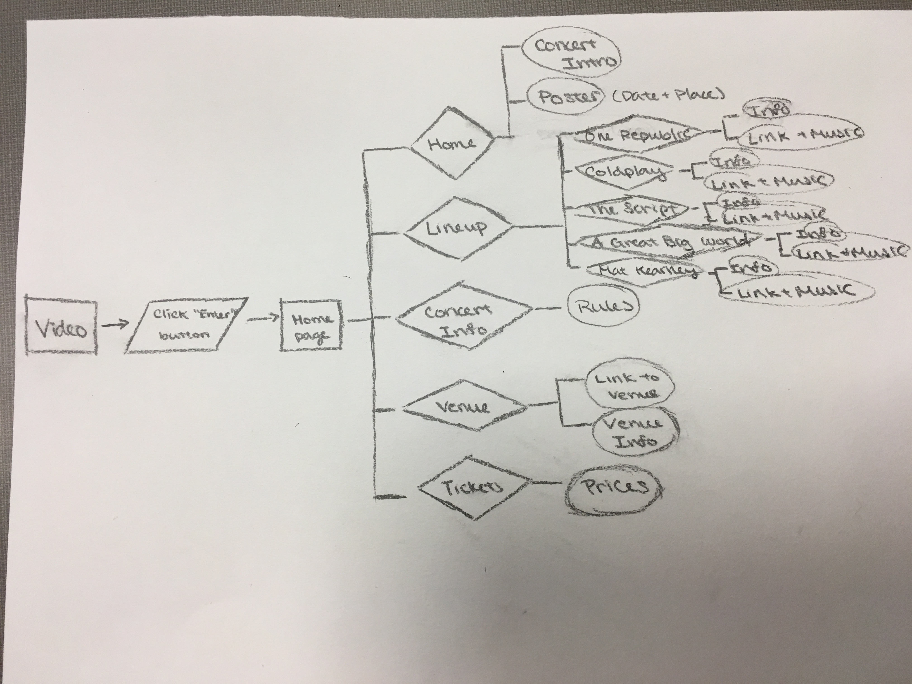
These are the proposed layouts of each page.
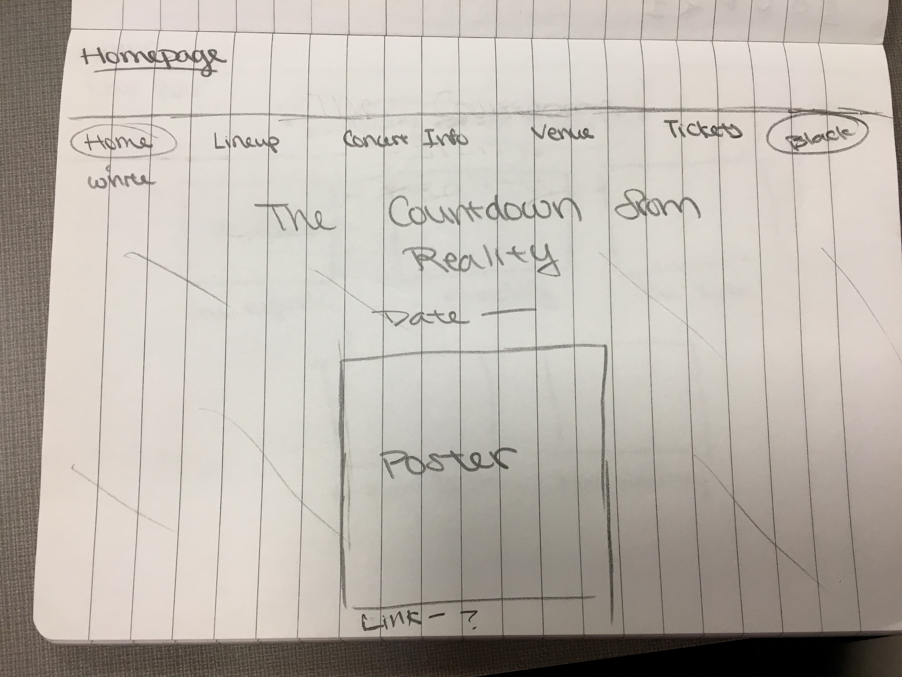
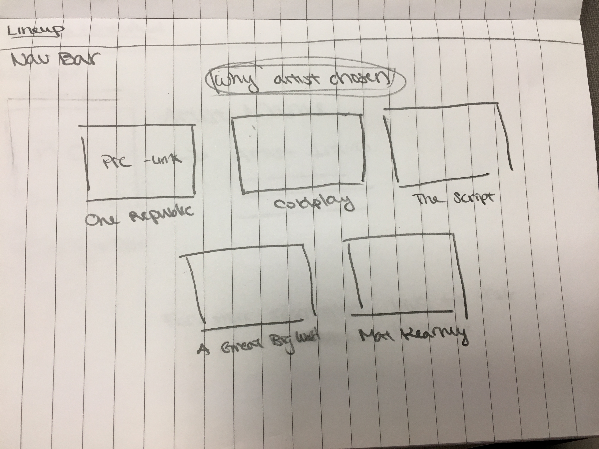
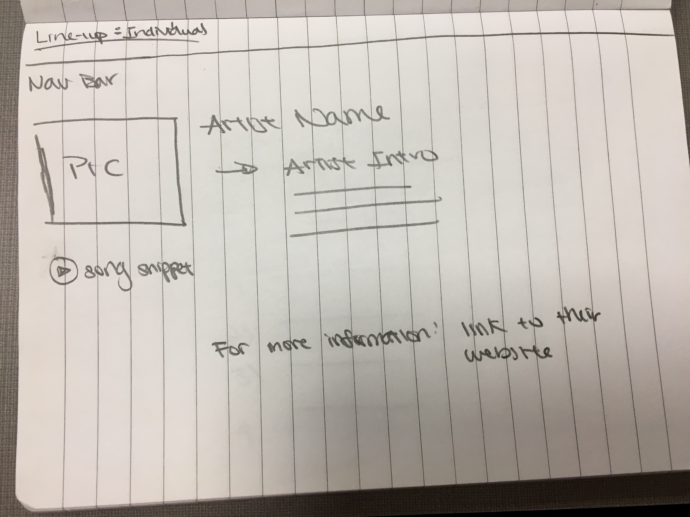
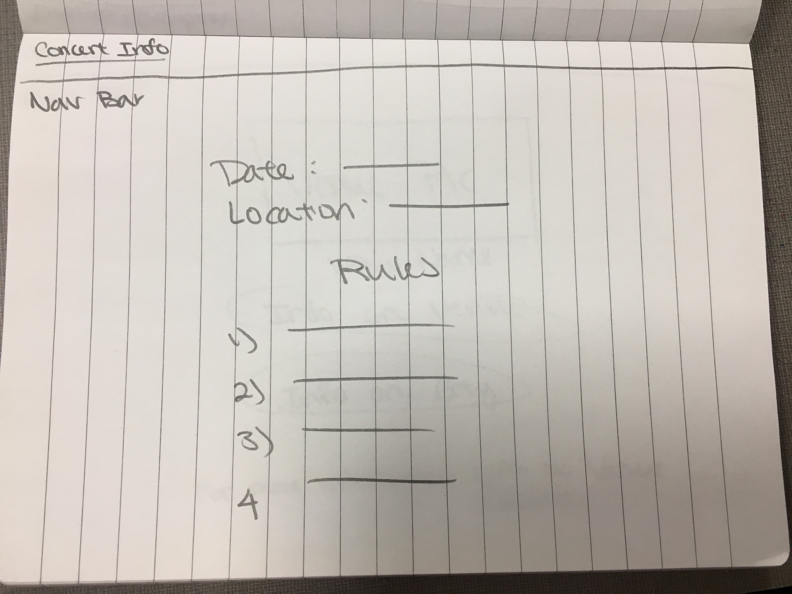
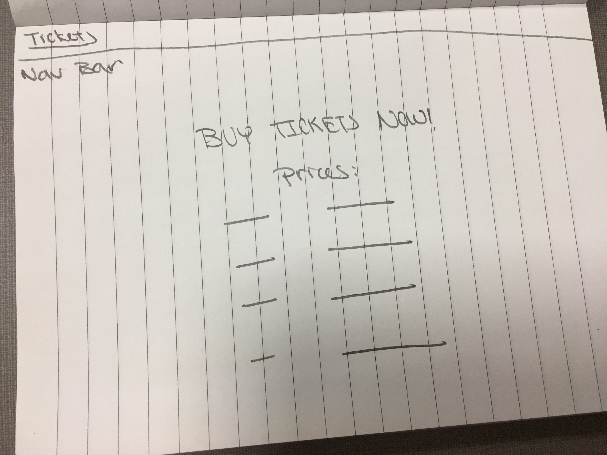
My layouts are very simple because I do not want my website to be too cluttered or overwhelmed. Also, the information on each page is centered because I find it the cleanest and easy-to-the-eye when website information is centered. I also want the background of the website to show on the sides of the information.